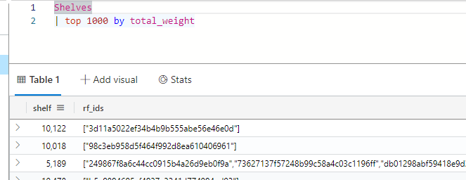
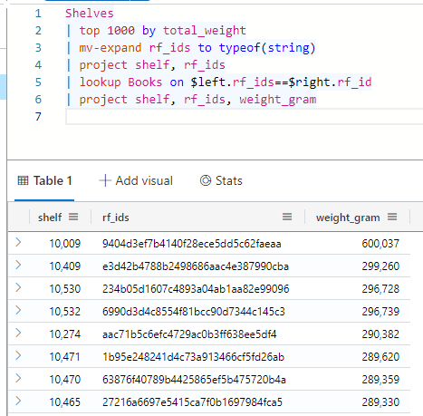
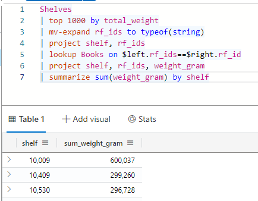
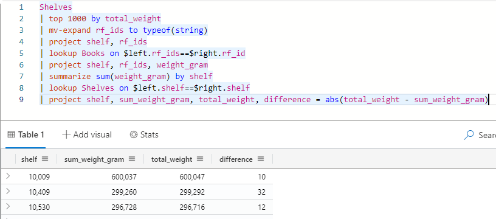
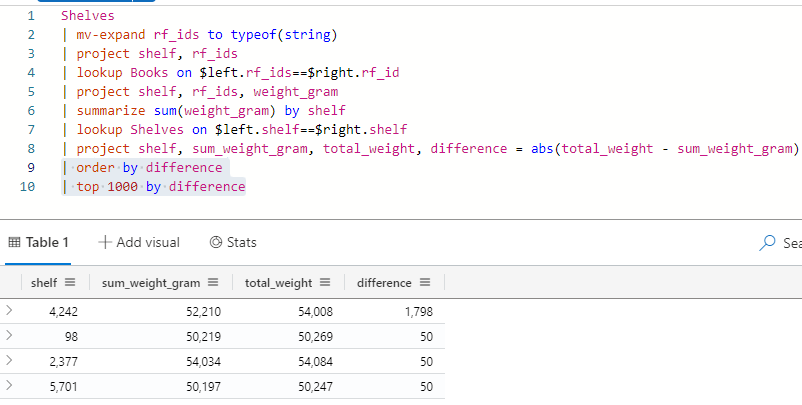

Kusto Detective Agency Season 1 (Challenge 1)#
OK, time for our first real challenge. Theres a bit of flavour text, but fundamentally we’re looking for some data that doesnt quite line up. As you could imagine, this could be quite useful when investigating cyber incidents or events. Unlike the last challenge, we now have two tables to work with.
Books: This is the properties of each individual book
Shelves: This is the data of each shelf, including its known books and total weight.
Solution#
Cleaning the Data#
We’ve already flagged the tables provided, but we should take a look before starting any investigation. As the ‘shelf’ is our target to understand, lets start there.
Shelves
| top 1000 by total_weight

So we’ve come across our first problem. The rf_ids (the books per shelf) are stored in a list/array. As we will need to look these up in the ‘Books’ table in the near future, we have to separate these out. The mv-expand command can do this for us.
Shelves
| top 1000 by total_weight
| mv-expand rf_ids to typeof(string)

Now, this may look like more data to work with, but it allows us to add the data for each book and then summarise it to find differences in the future. If it’s not making sense, just stick with me for now, it will make sense soon. What we have now is the list of all shelved books, and what shelf they are in. We also have the total weight, but it’s unnecessary data at this point, lets get rid of it for now by only selecting the columns we need.
Shelves
| top 1000 by total_weight
| mv-expand rf_ids to typeof(string)
| project shelf, rf_ids
Adding Relevant Data#
As I mentioned above, we now have the list of all shelved books and what shelf they are in. Our goal is to compare the total weight of each shelf with the expected weight (based on the recorded rf_ids). Let’s add the weight of each book to our current list. To do this, we need to ‘look up’ the rf_ids in the books table to get the weight.
Shelves
| top 1000 by total_weight
| mv-expand rf_ids to typeof(string)
| project shelf, rf_ids
| lookup Books on \\(left.rf_ids==\\\)right.rf_id
| project shelf, rf_ids, weight_gram

With the lookup command, we have introduced the \\(left and \\\)right variables. This is sort of inherited from joins (which we’ll get to later), but to put it simply; Left is what we currently have & Right is what we are adding. In this case, we had our cleaned data (the left) and looked it up in the books table (the right data). We grabbed the rf_ids from the current data, and looked for this value in the right (new) data, then added this to our current data.
As this brings in the entire found row, I also cleaned up the results to only have the rows we care about (shelf, rf_ids and weight_gram). Honestly we dont need the rf_ids any more but it’s a sanity check for me that we still have multiple books.
Finding the Mismatched Shelf#
All this effort was to find the mismatched shelf. Now that we have the books per shelf, and their expected weight, we can see what they should be. Expanding on the summarize from the previous task, we can also group by another column (in this case, the shelf)
Shelves
| top 1000 by total_weight
| mv-expand rf_ids to typeof(string)
| project shelf, rf_ids
| lookup Books on \\(left.rf_ids==\\\)right.rf_id
| project shelf, rf_ids, weight_gram
| summarize sum(weight_gram) by shelf

You’ll remember that in the lookup, we have our ‘current’ data on the left, NOT the original table. With that in mind, we can now lookup the total_weight from the shelves table and compare these to find our mismatch. Again we will use the lookup and then clean up the results. In this case, I’ve also used the project command to calculate a new column which is the difference between the two values.
Shelves
| top 1000 by total_weight
| mv-expand rf_ids to typeof(string)
| project shelf, rf_ids
| lookup Books on \\(left.rf_ids==\\\)right.rf_id
| project shelf, rf_ids, weight_gram
| summarize sum(weight_gram) by shelf
| lookup Shelves on \\(left.shelf==\\\)right.shelf
| project shelf, sum_weight_gram, total_weight, difference = abs(total_weight - sum_weight)

Lastly, we can sort by the difference to find our ‘sus’ shelf (and remove the all except the top 1000 from our initial setup).
Shelves
| mv-expand rf_ids to typeof(string)
| project shelf, rf_ids
| lookup Books on \\(left.rf_ids==\\\)right.rf_id
| project shelf, rf_ids, weight_gram
| summarize sum(weight_gram) by shelf
| lookup Shelves on \\(left.shelf==\\\)right.shelf
| project shelf, sum_weight_gram, total_weight, difference = abs(total_weight - sum_weight_gram)
| order by difference
| top 1000 by difference

Thats a pretty clear result to me.
Final Script#
#Shelves
#| mv-expand rf_ids to typeof(string) //the rf_ids is an array in one column. Split them off to make it possible to look up the books
#| project shelf, rf_ids //quick cleanup
#| lookup Books on $left.rf_ids==$right.rf_id //do the lookup. Left is current data, right is 'books' data
#| project shelf, rf_ids, weight_gram //clean up columns
#| summarize sum(weight_gram) by shelf //group the weights by shelf
#| lookup Shelves on $left.shelf==$right.shelf //find the expected weight of the shelf
#| project shelf, sum_weight_gram, total_weight, difference = abs(total_weight - sum_weight_gram) //calculate the difference between expected and actual
#| order by difference // find the largest outlier
#| top 1000 by difference //just give the best results